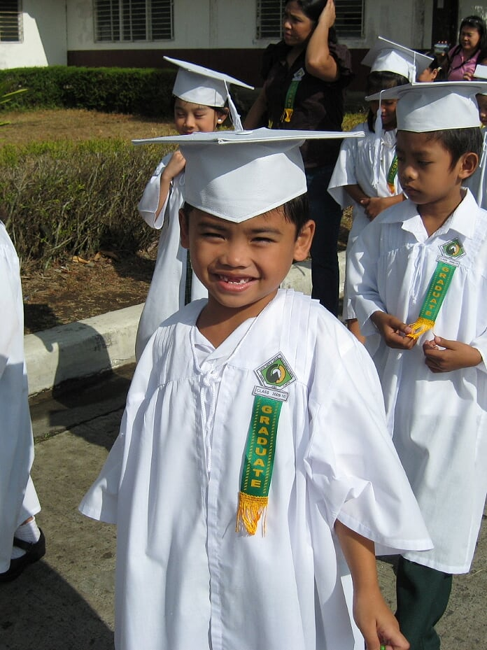
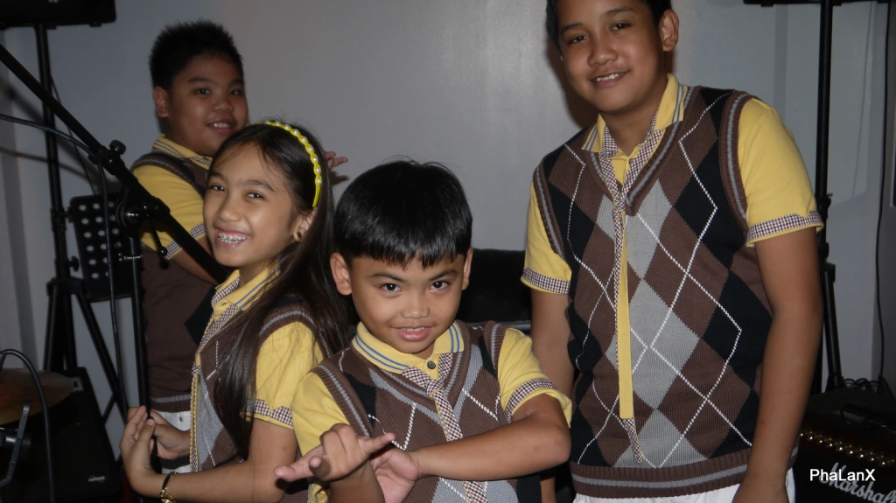
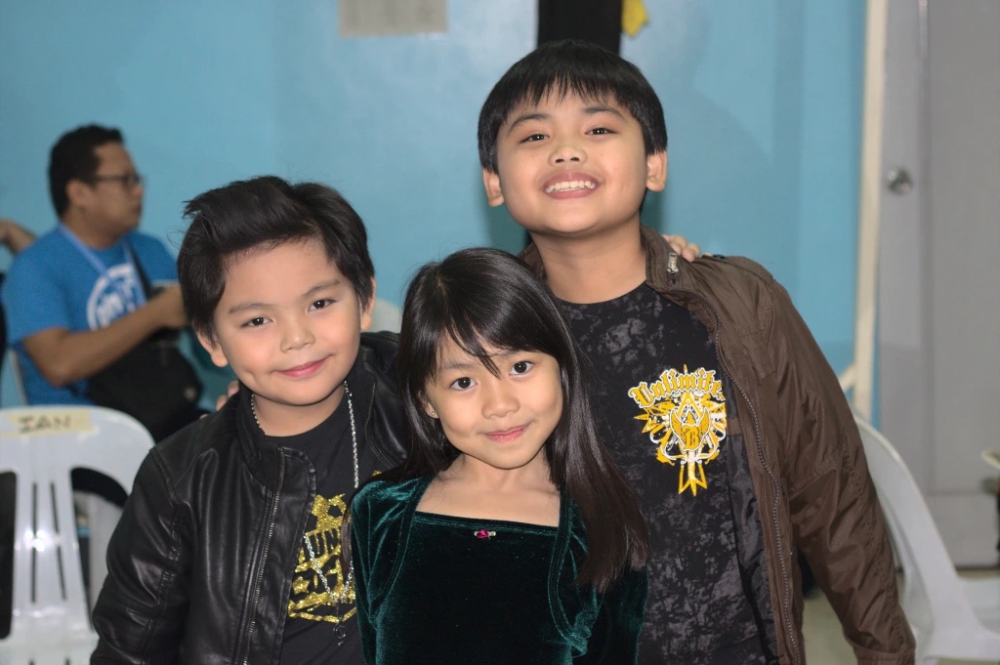
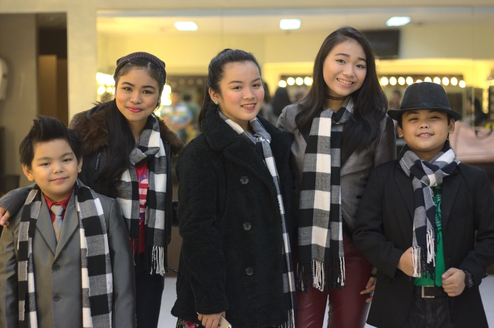

Education
. . .
I went to pre-school in the Cavite State University – Child Development Center in Indang. When I moved-up to 1st grade at the same said school, I got kicked out in the middle of the first semester, and got transferred to Santa Belina Learning School in Dasmariñas, a school with special education for special children like me. The first time I sang in front of many people happened at my recognition day in that school.
I finished 1st grade in that school but transferred to Saint Thomas Becket Academy in Trece Martires because Dasmariñas is too far from our house. I met Plethora in this school, who helped me overcome my mental illness by introducing me to music. I finished 2nd grade in my new school but when I moved-up to 3rd grade, I got kicked out once again.



I transferred to Hillcrest Periwinkle School in Indang where I first met the members of my present band, Kontratyempo. While in this school, I got in the singing competition, The Voice Kids of the Philippines. I consider my time in that competition as an achievement, even though I did not win. I also met many new people while I was in this competition. Along with my bandmates, they became my best friends and helped grow to who I am today as a person and a musician. I finally finished 3rd grade to 6th grade in that school.
I went to high school in the Cavite State University – Laboratory Science High School and finished my 7th grade to 12th grade. I got interested on a lot of things and learned them during my high school years, like solving the Rubik’s cube under 15 seconds, programming, writing stories, and many more.

I am currently studying in the Cavite State University as a Computer Science student. I am interested on a lot of new things to learn like more programming, and also philosophy and culinary arts. I intend to improve my skills with those subjects. I have learned a lot of things not only in the schools I have been to, but also from the experiences from different places where I met lots of new people. I will carry these learnings through the future events of my life and cherish every moments I have with my new found family and friends.